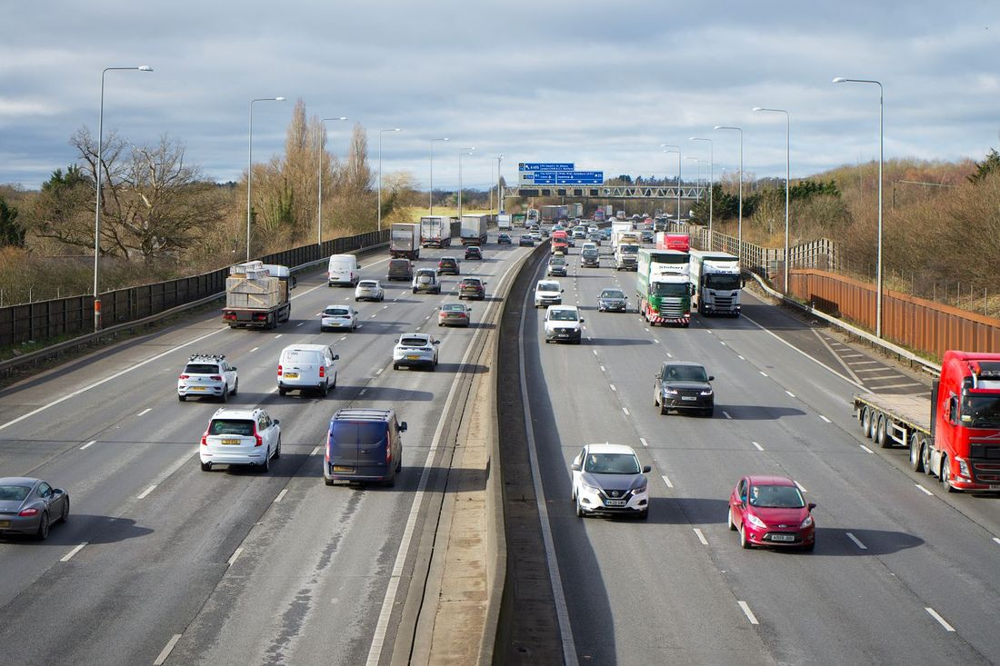
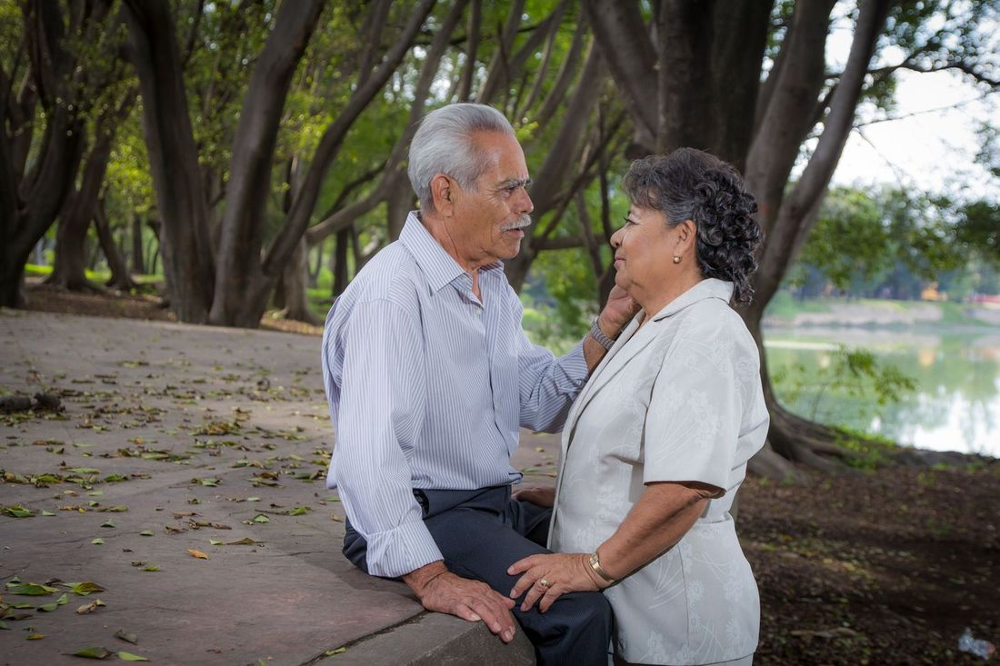
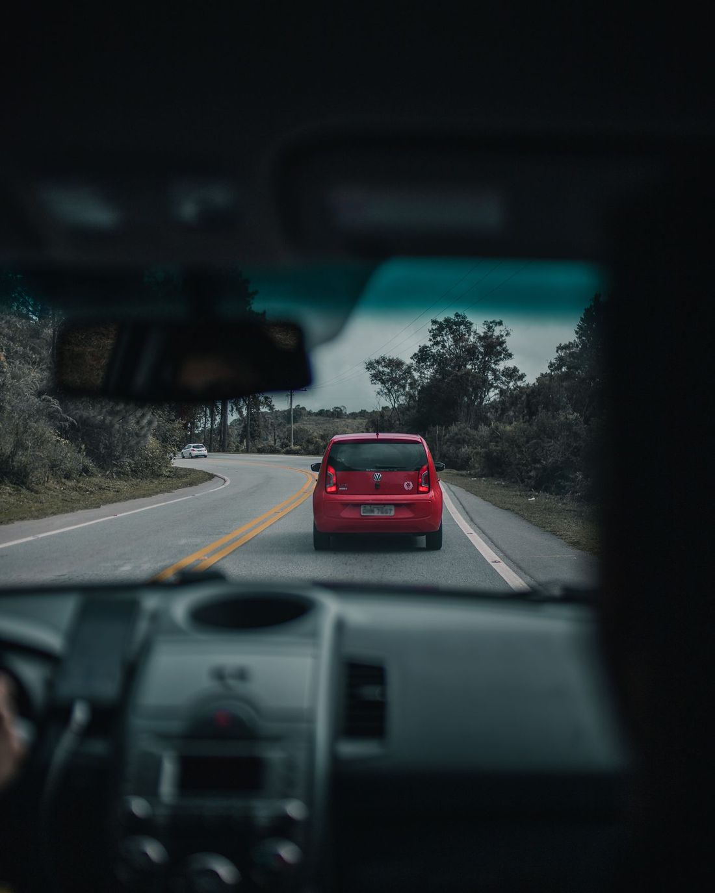
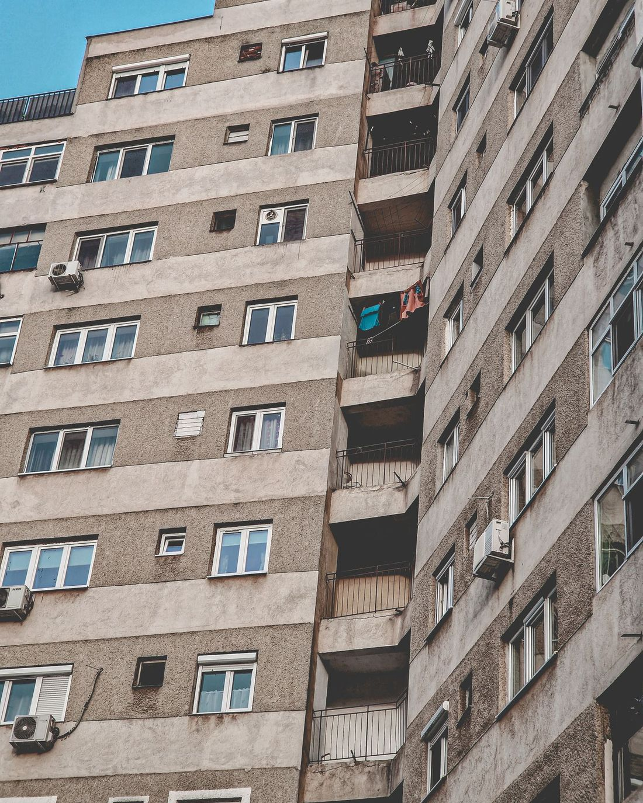

Yasal zorunlulukTrafik Sigortası
Trafiğe çıkan her araç için yasal zorunluluk. Kazada karşı tarafa verdiğiniz zararları poliçe limitleri dahilinde karşılar.
Bireysel Emeklilik Sistemi (BES), düzenli katkılarla uzun vadeli birikim yapmanızı sağlar. Ödediğiniz katkı paylarına devlet tarafından katkı eklenir ve birikiminiz seçtiğiniz fonlarda değerlenir.

BES, devlet teşvikli, gönüllü bir uzun vadeli birikim sistemidir. Katılımcı olarak ödediğiniz katkı payları, emeklilik şirketinin sunduğu ve sizin seçtiğiniz fonlarda değerlendirilir. Türk lirası ile ödenen katkı paylarına 1 Ocak 2026’dan itibaren %20 oranında devlet katkısı eklenir (yıllık tavan, brüt asgari ücrete bağlı olarak hesaplanır).
Sistemde en az 10 yıl kalıp 56 yaşını doldurduğunuzda emeklilik hakkı kazanırsınız ve devlet katkısının tamamını alırsınız. Daha erken ayrılmanız halinde devlet katkısının sistemde kaldığınız süreye göre belirli bir kısmını hak edersiniz.
Teminatlar sigorta şirketine ve seçilen pakete göre değişebilir. Teklif karşılaştırmasında her poliçenin hangi teminatları içerdiğini ayrı ayrı belirtiyoruz.
1 Ocak 2026’dan itibaren TL olarak ödenen katkı paylarının %20’si oranında devlet katkısı eklenir; yıllık üst sınır brüt asgari ücrete göre belirlenir.
Sisteme girişinizden itibaren en az 10 yıl geçmiş ve 56 yaşını doldurmuş olmanız gerekir.
Evet. Katkı payı ödemelerine ara verebilir, tutarı değiştirebilirsiniz; birikiminiz fonlarda değerlenmeye devam eder.
Evet, belirli koşullarla birikiminizi başka bir emeklilik şirketine aktarabilirsiniz. Mevcut planınızı inceleyip avantaj/dezavantajını anlatıyoruz.
Hayır. OKS işvereniniz aracılığıyla otomatik olarak dahil olduğunuz sistemdir; gönüllü BES ondan ayrıdır ve ikisi birlikte sürdürülebilir.

Yasal zorunlulukTrafiğe çıkan her araç için yasal zorunluluk. Kazada karşı tarafa verdiğiniz zararları poliçe limitleri dahilinde karşılar.

İsteğe bağlıÇarpma, çarpışma, yanma, çalınma ve doğal afetlere karşı kendi aracınızı korur. İhtiyaca göre teminatlar birlikte belirlenir.

Yasal zorunlulukDeprem ve depremin yol açtığı yangın, infilak, tsunami ve yer kaymasının binanıza verdiği zararları teminat altına alır.
Bilgilerinizi gönderin, karşılaştırmalı teklifinizi hazırlayalım.